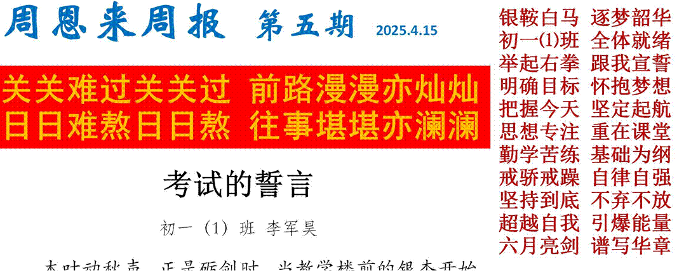
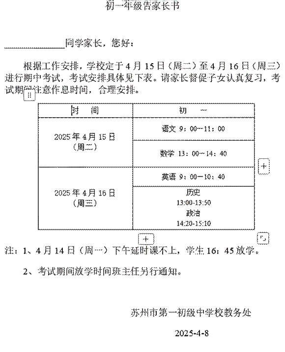
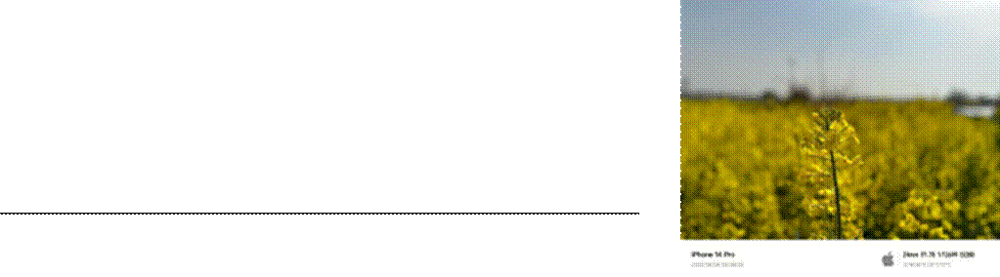
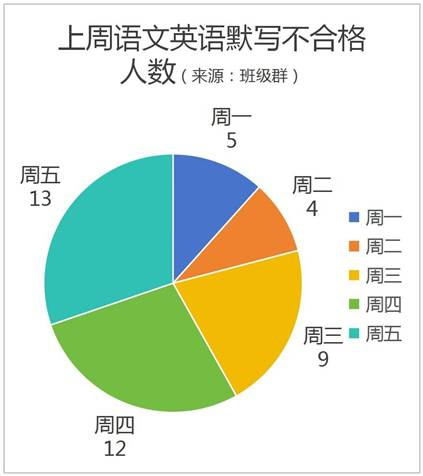

这不仅是知识的检阅场，更是意志的试金石。在此，向全体同学，引用 Soil Grass 的话：
——进了一班，就不等于进了保险箱！
——首先，态度是最重要的，五班他们其实一点都不比你们差，学习态度一个比一个认真。
——不要被周恩来班的光环，闪瞎了眼！
——你有没有抄吴琼（无穷）的作业？
——我教你们发面，你们做馒头花卷，可总有几个人，发面不会做，就开始做各种各样的糕点。
——我对你们客气，你们把我当福气了是吧！

同学们，考场如镜，照见的是晨读时你与晨曦的约定，是夜自习最后一个合上书本的决然。让我们以《劝学》中"锲而不舍，金石可镂"的韧性，以《少年中国说》"干将发硎，有作其芒" 的锐气，在期中考试的考场上，为半学期的耕耘交出满意答卷！安全提醒苏州市第一初中 4 月 11 日 18:18 据气象部门预报，4 月 11 日夜里我市有雷阵雨天气，雨量可达中到大雨，北部沿江局部暴雨。12—13 日陆地阵风可达 7 到 9 级、沿江沿湖 9 到 10 级，14 日阵风 6 级水面 7 到 8 级。12 日白天气温持续降低，午后气温在 13 到 15℃。
请各位家长密切关注天气变化，做好安全防护：
1.出行安全。尽量减少外出，如需外出，穿雨衣而非打伞，避开广告牌、大树、电线杆、简易建筑物等危险区域，过马路小心路面湿滑和积水，减速慢行。

3.居家安全。回家后检查电器、燃气安全，拔掉不必要电器插头，妥善安置阳台花盆杂物。
如遇房屋进水、漏电等紧急情况，及时联系物业或相关部门
1.周报中引用《劝学》“锲而不舍，金石可镂” 和《少年中国说》“干将发硎，有作其芒”来激
励同学。（1）这两句名言分别强调了什么精神品质？ 吴铭的摄影作品
（2）结合《孙权劝学》中吕蒙的学习经历，分析“锲而不舍”对成长的意义。（不少于 80 字）
2.“木叶动秋声，正是砺剑时”，若一棵树的叶子每天掉落原有数量的 20%，且第 1 天有 1000 片叶子：
（1）写出第 n 天剩余叶子数量的表达式（用代数式表示）。
（2）计算第 5 天剩余的叶子数量（结果保留整数）。
3.用英语写一条 50 词左右的倡议书，号召同学“Stay modest and keep working hard”
4.

周报提到“六月亮剑，谱写华章”，历史上“剑”常象征奋斗精神。结合隋唐至宋元时期，
（1） 列举一项该时期体现“奋斗精神”的重大工程或制度，并说明其影响。
（2） 对比安史之乱前后唐朝社会变化，分析
“坚持到底”对王朝兴衰的启示。
5. 周报批评“抄作业”现象并强调“自律自强”：
（1） 用“情绪管理”知识分析，学生抄作业可能出于哪些心理？如何调节？
（2） 结合“集体生活”单元，谈谈周恩来班同学应如何通过“自律”维护班级荣誉？（联系周报中的宣誓内容）
6.学者闻一多为钻研典籍锲而不舍，兀兀穷年，让人敬佩；阿长虽粗俗浅薄，却真心爱护小鲁迅，让人感动；杨绛先生心怀大爱，对不幸者深深愧疚，让人难忘……在你的记忆深处，肯定也有一个触动你某种情感的人。
请以“那个让我（）的人”为题，写一篇作文。
请阅读下面的文字，按要求作文。
7.《我的家乡》杂志现面向学生征稿：可以通过介绍家乡的自然风光、名胜古迹、美丽乡村，让更多的人欣赏它秀美的人文山水画卷；也可以通过分享身边的凡人小事，让更多的人感受到你家乡的风土人情；作为新时代少年，更可以谈谈如何才能不负家乡、不负青春、不负未来。请你自选个角度，自拟题目进行创作。